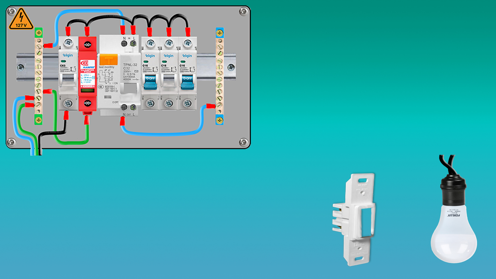
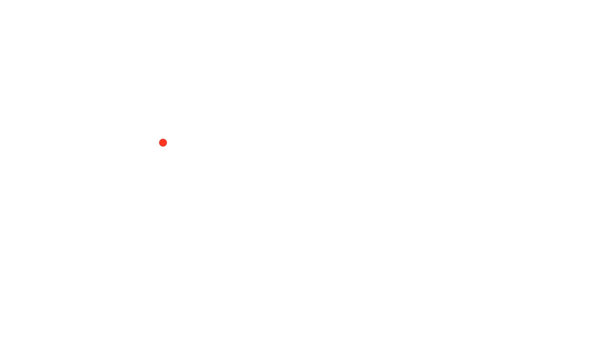
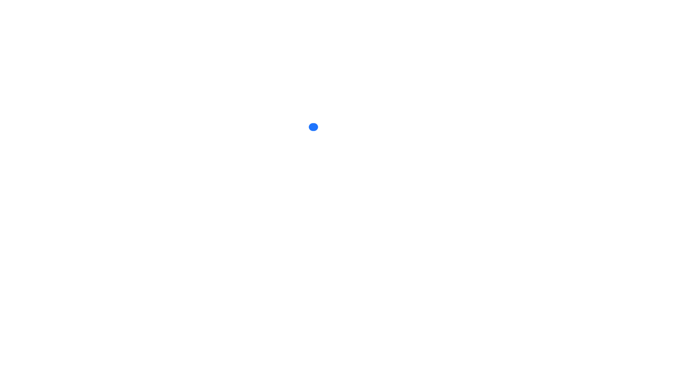
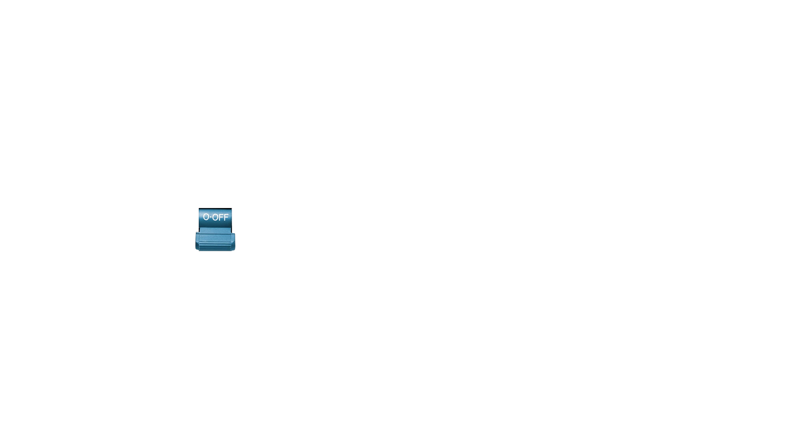
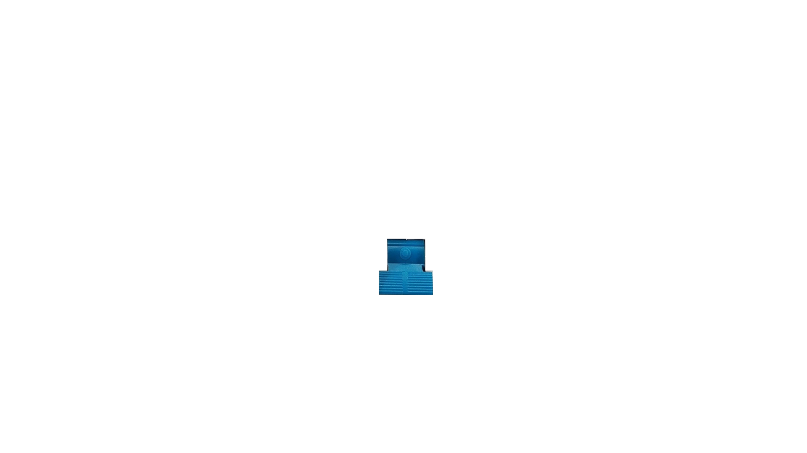
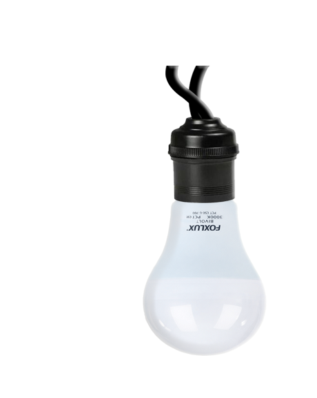

Interruptor Simples
CIRCUITO MONOFÁSICO - 127V © Desenvolvido por Ivan Santos - ConectaeadPLUS - 2026A Fase pode ser de qualquer cor.
(Item 6.1.5.3.4 da NBR-5410)
(Item 6.1.5.3.4 da NBR-5410)
O interruptor deve seccionar o condutor vivo
(Item 6.3.7.2.1 da NBR-5410)
(Item 6.3.7.2.1 da NBR-5410)
O retorno, também, pode ser de qualquer cor
(Continuidade da Fase - NBR-5410)
(Continuidade da Fase - NBR-5410)
O neutro deve ser de cor azul claro
(Item 6.1.5.3.1 da NBR-5410)
(Item 6.1.5.3.1 da NBR-5410)






